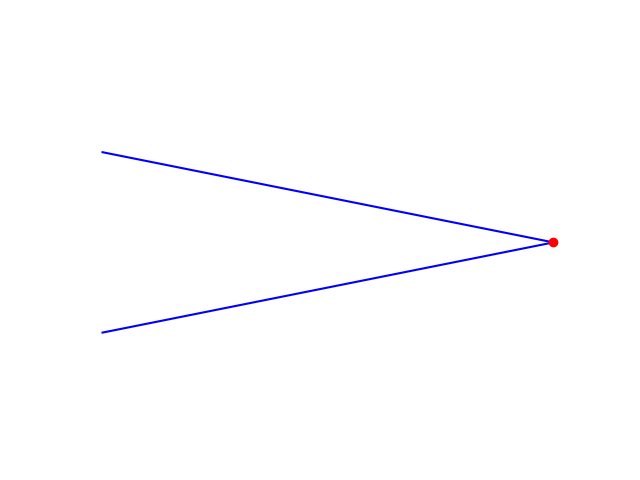
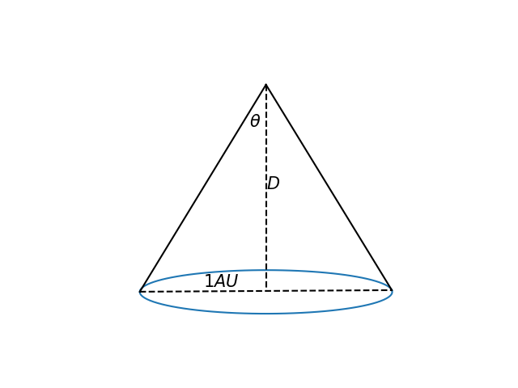
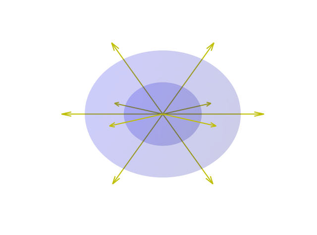
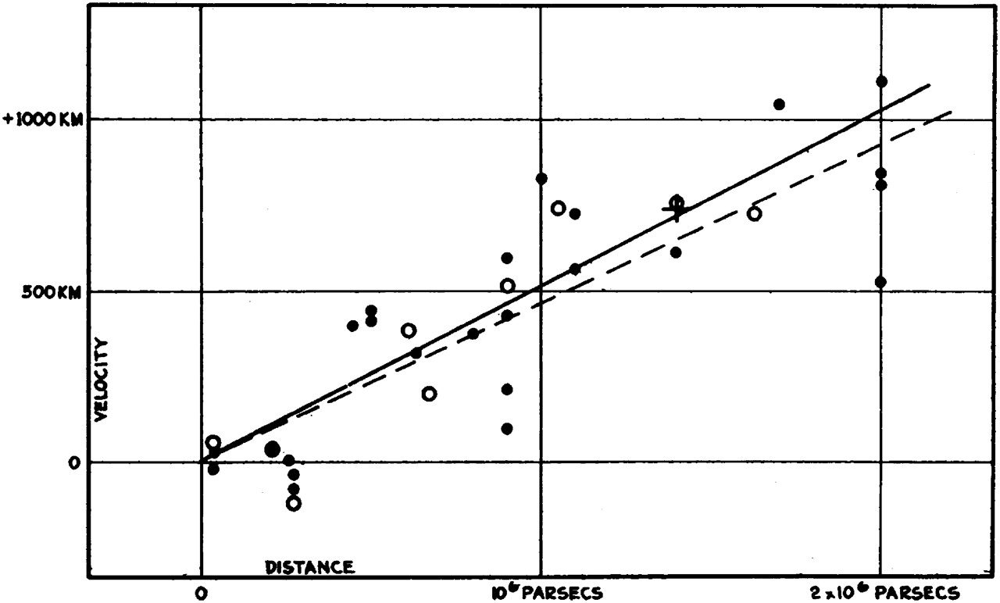
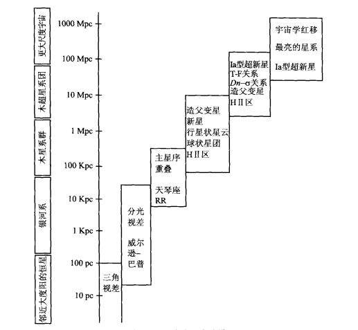

本文来自初光天文科普工作室，作者为本人。原文链接
即使没有亲眼见过满天繁星，你可能也听说过这样一个事实：即使是太阳系外离我们最近的恒星，与我们的距离也有4光年之遥（一光年定义为光传播一年走过的距离），而我们肉眼所见的很多恒星与我们的距离都可以达到数千光年。银河系外的星系的距离则又更上一层楼，人们甚至可以探测到数百亿光年远的星系发来的光。
在感叹于宇宙的辽阔的同时，你有没有想过我们是如何确定遥远的天体与我们之间的距离的呢？这并不是一个简单的问题——我们没法制造出来一个巨大的尺，把天体和地球放在它的两端；也不能向天体发射一束激光，测量它反射回地球需要多长时间（不过对于太阳系内的行星，这一操作是可行的）。事实上，我们从天体接收到的信息也几乎只有它发出的光。下面，让我们看看天文学家利用了哪些方法来测量天体的距离。
三角视差法
如下图所示，一个位置固定的物体，我们从不同的位置向它看去，视线方向也会不同，这种现象被称为视差。

那么视差和天体距离又有什么关系呢？我们知道，地球是绕太阳运动的，因此在一年之中的不同时刻观测同一颗恒星也会有视差现象，称为周年视差。参考下图，我们可以近似地得到周年视差$\theta$与距离的关系：
其中$1AU$是一天文单位，约等于$1.5\times 10^{11}m$，它代表者地球与太阳的平均距离。

这就告诉了我们一种测量距离的方法。
基于上面的讨论，我们可以定义一个新的距离单位——秒差距(parsec, 简记为pc)。距离我们1秒差距的恒星的周年视差为1角秒，它等于1度的1/3600。经过简单的计算可以得出，1秒差距约等于3.26光年。在天文学中，秒差距是一个比较常用的距离单位。
标准烛光
上面介绍的三角视差法可以较为精确地确定恒星离我们的距离，但是这并不是这个问题的全部答案。我们从上面的讨论中也可以看见，天体距离我们越远，它的周年视差就越小。那么对于远到一定程度的天体，我们将无法分辨出来它们的周年视差，自然三角视差法也就不能用于测量距离了。事实上，目前用三角视差法测距，一般几百pc就是极限了。那么对于更远的天体，我们该怎么确定它的距离呢？
在了解下面要介绍的方法之前，让我们先来考虑这样一个问题。在日常生活中，很多人应该都会有这样的经验，一个发光的物体，比如蜡烛，在它离我们比较近的时候会感觉比离我们远的时候更亮。这是因为当它单位时间内辐射的能量（称为光度）是一定的，离我们更远时，光会分散到更广的面积上，那么平均下来各处的亮度就会变弱。经过定量的分析和计算，我们发现观测到的亮度和距离的平方成反比。

你可能已经知道了为什么要特意进行上面的讨论了。我们可以测量出到达望远镜的星光的亮度，如果通过其他手段可以确定恒星的光度，那么我们就可以计算出恒星的距离。已知其光度的天体，我们称之为“标准烛光”。
有很多种标准烛光用于距离测量。其中一种是造父变星，这是一种亮度周期性变化的恒星，在对这一类天体的观测和研究中，我们发现它亮度变化的周期的对数是和它的光度的对数成正比的，因此我们可以通过观测一个星系中的造父变星来确定这个星系距离我们的位置。我们所熟知的北极星其实就是一颗造父变星。其他的，比如天琴座RR变星，Ia型超新星等，也被作为标准烛光来确定或近或远的距离，这里就不一一介绍了。

宇宙学红移
在上世纪初，哈勃通过分析河外星系的光谱发现，大多数河外星系的光谱都是有红移的，即接收到的谱线的波长比本来的波长更长。如果把这种红移当做是星系在远离我们运动的多普勒效应导致的结果的话，推算出星系远离我们的速度大致与距离成正比，这被称做哈勃关系，他计算的结果如下图所示：

现在的宇宙学告诉我们，这种红移并非是由于普通意义上星系在远离我们运动，而是由于宇宙膨胀导致的。根据广义相对论的计算，我们可以得到宇宙学红移的表达式。在近距离内，它可以近似成哈勃观测得到的正比关系。对于很远的星系，宇宙学红移也是一种测量距离的手段。
结语——宇宙距离阶梯
上面简单地介绍了三种不同的距离测量方式，但也只是讨论了最基本的概念，实际上的距离测量方法细化来看也各有其不同的原理，只是无法在本文中一一介绍了。

你也许会困惑，上面介绍的一些方法中，确定这个方法的有效性的过程中本来就利用了距离（比如，确定造父变星的周光关系时，我们不能直接得到它的光度，而是要根据观测到的亮度和距离推算光度），如果本来就知道距离的话为什么还要发展一个新的方法呢？事实上，各种测量方法都有其适用范围和限制，我们通过一个近距离上可用的方法来发现和确定下一个在更远的距离上可用的方法，如此一级一级推下去，这一系列方法有个形象的名字——宇宙距离阶梯。
在这或简单或复杂的阶梯上一层层攀登的过程，也恰似人类认知自身所处的宇宙的过程。我们可能一生都局限在地球这一微不足道的行星之上，但是仍可以用科学的方法去探索浩瀚的宇宙。